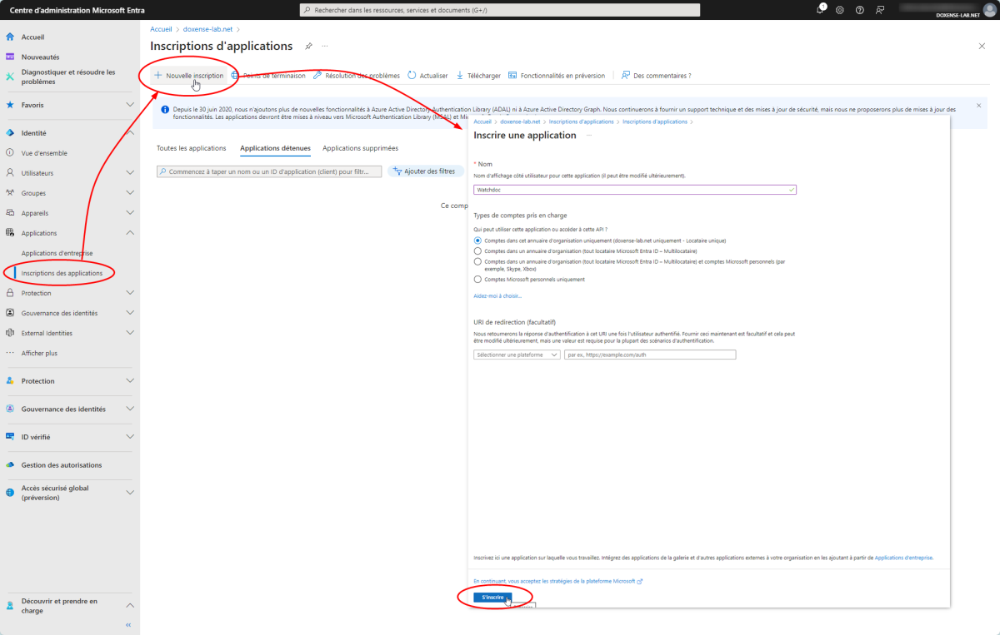
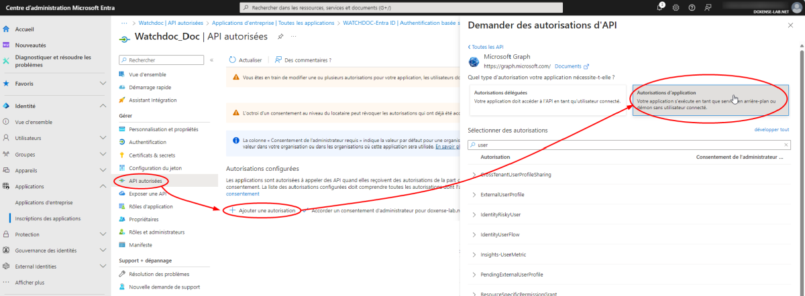
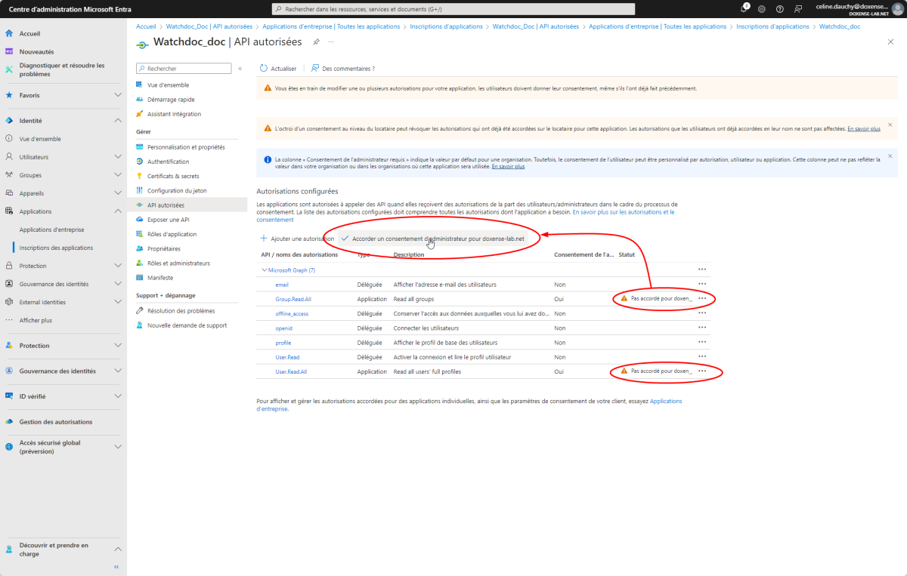
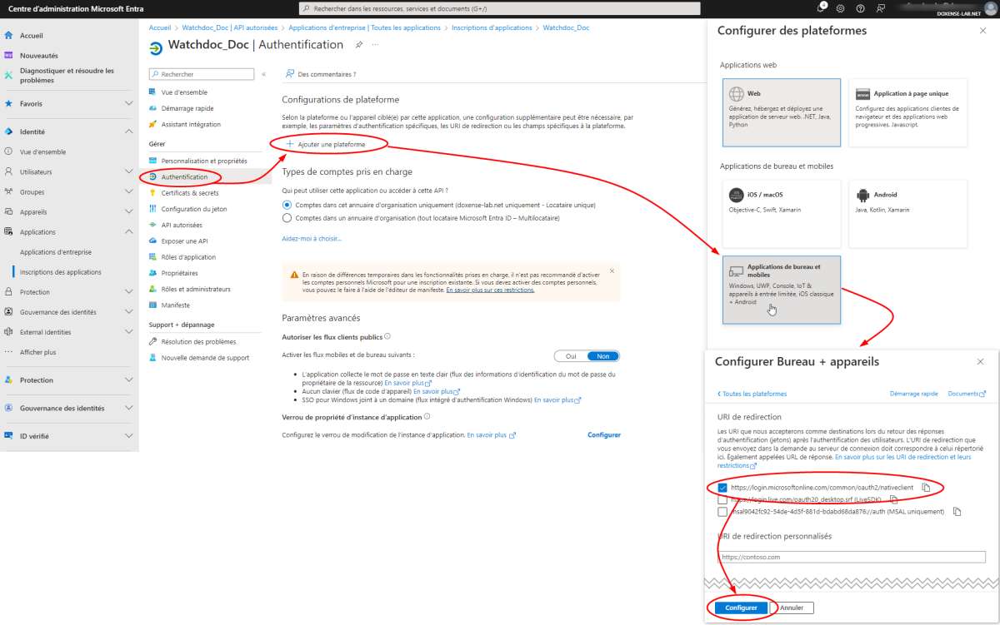
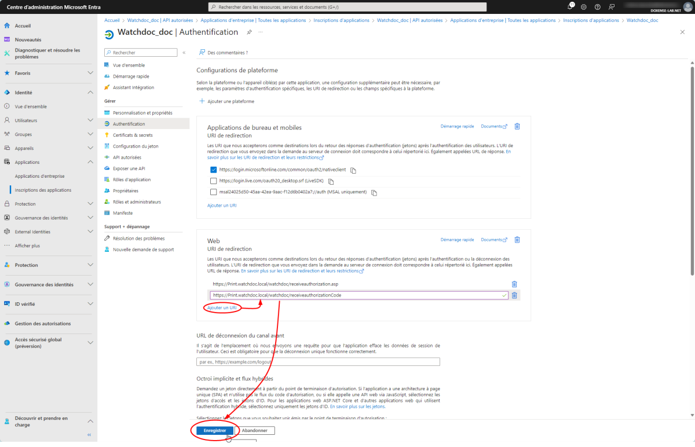
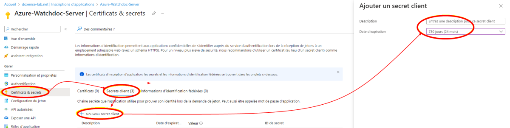

* Cliquez sur les images pour les agrandir
Inscrire l'application
Pour inscrire les applications Watchdoc Server dans Entra ID :
-
accédez au Centre d'administration Microsoft Entra en tant qu'administrateur ;
-
dans le menu de gauche, cliquez sur Applications > Inscription des applications:
-
dans le menu de cette interface, cliquez sur le bouton Nouvelle inscription :
-
dans l'interface Inscrire une application :
-
saisissez le nom de l'application (par exemple, Watchdoc) ;
-
cochez Comptes dans cet annuaire d'organisation uniquement.
-
-
Cliquez sur S'inscrire :

{kind=link}
Accorder des autorisations
Une fois l’application inscrite, configurez-la :
-
cliquez dans le menu Gérer > API autorisées ;
-
cliquez sur Ajouter une autorisation ;
-
dans l'interface Demander des autorisations d'API, sélectionnez Microsoft Graph ;
-
choisissez le type Autorisations d’application qui permet à Watchdoc d’effectuer des opérations en son nom sans contexte utilisateur spécifique :

{kind=link}
-
Recherchez puis configurez les autorisations suivantes :
-
Group > Group.Read.All : read all groups
-
User : User.Read.All :Read all users' full profiles
-
-
Cliquez ensuite sur Autorisations déléguées qui permet au client Windows d'utiliser l'API et d'agir au nom de l'utilisateur qui se connecte.
-
Recherchez puis configurez les autorisations suivantes :
- email : afficher l'adresse e-mail des utilisateurs
-
offline_access : conserver l'accès aux données auxquelles vous avez donné accès aux utilisateurs
- User.read : activer la connexion et lire le profil utilisateur
- openid : connecter les utilisateurs
- profile : afficher le profil de base des utilisateurs.
-
Cliquez sur Ajouter les autorisations.
Accorder un consentement d'administrateur
Une fois les autorisations ajoutées, elles apparaissent dans la liste Autorisations configurées, avec le statut Pas accordé...
-
Cliquez sur Accorder un consentement d’administrateur pour [ORGANISATION]
-
Confirmez l'accord de consentement :

{kind=link}
Configurer les authentifications
Une fois les consentements accordés, il est nécessaire de configurer 3 authentifications :
-
pour le client Windows
-
pour l'interface web Watchdoc
-
pour l'interface web WSC
Client Windows
-
dans le menu de gauche, cliquez sur Authentification :
-
dans l'interface Configurations de plateforme, cliquez sur Ajouter une plateforme ;
-
sélectionnez Applications de bureau et mobiles:
-
dans l'interface URI de redirection, cochez la case
https://login.microsoftonline.com/common/oauth2/nativeclient -
cliquez sur Configurer :

-
Cliquez sur le bouton Configurer.
{kind=link}
Interface web Watchdoc
-
Cliquez ensuite sur Ajouter une plateforme.
-
Sélectionnez Web.
-
Dans l'interface Configurer web, saisissez l'URI de redirection suivante :
https://[nom_serveur_impression]/watchdoc/receiveauthorizationcode.asp -
Cliquez sur Configurer :
{kind=link}
-
L'URI s'affiche dans la section Web.
Interface web WSC (Watchdoc Supervision Console)
-
Dans cette section, cliquez sur Ajouter un URI et saisissez l'uri suivant :
https://[serveur_wsc:port_wsc]/Account/ReceiveAuthorizationCode
-
Cliquez sur Enregistrer :

{kind=link}
Configurer un secret
Il est nécessire d'ajouter un secret (mot de passe) à votre application pour sécuriser les échanges entre elle et l'annuaire.
Pour ajouter un secret :
-
depuis le menu Gérer, cliquez sur Certificats & secrets ;
-
dans l'onglet Secrets client, cliquez sur Ajouter secret client :
-
dans l'interface Ajouter un secret client, saisissez :
-
une description à votre secret
-
une date d’expiration (le délai est limité à 24 mois) :

-
-
Cliquez sur Ajouter.
{kind=link}
è Après validation, la valeur du secret est affichée : veillez à copier la valeur du secret car elle ne vous est présentée qu'un seule fois :
{kind=link}
Consulter les informations d'applications
Dans le menu Vue d'ensemble sont affichées les informations nécessaires à la configuration des applications dans Watchdoc :
-
ID d'application (client)
-
ID de l'annuaire (locataire) : Tenant ID
{kind=link}
è Une fois l'application Watchdoc inscrite dans Entra, configurez l'annuaire Entra dans Watchdoc.